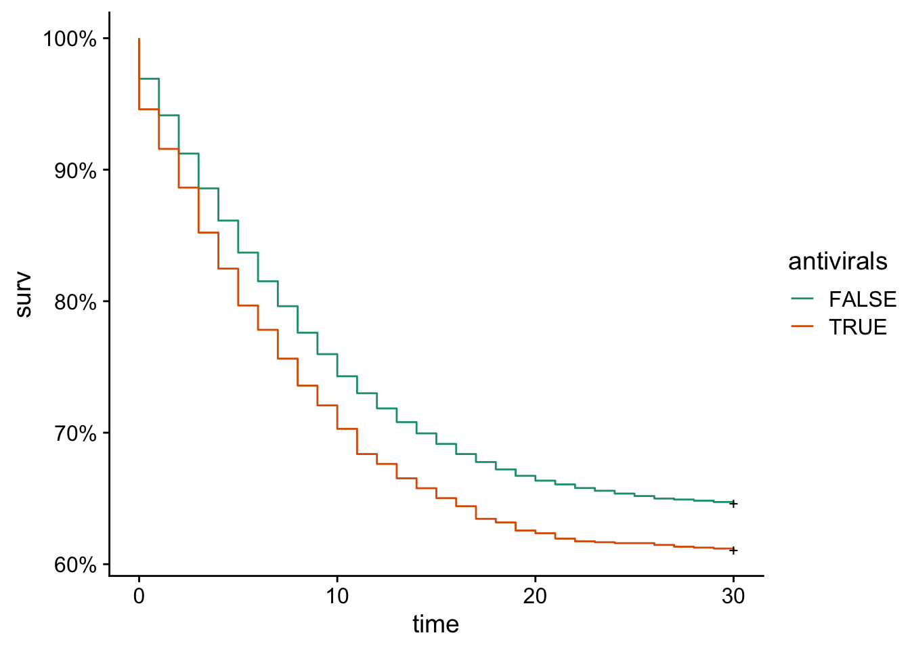
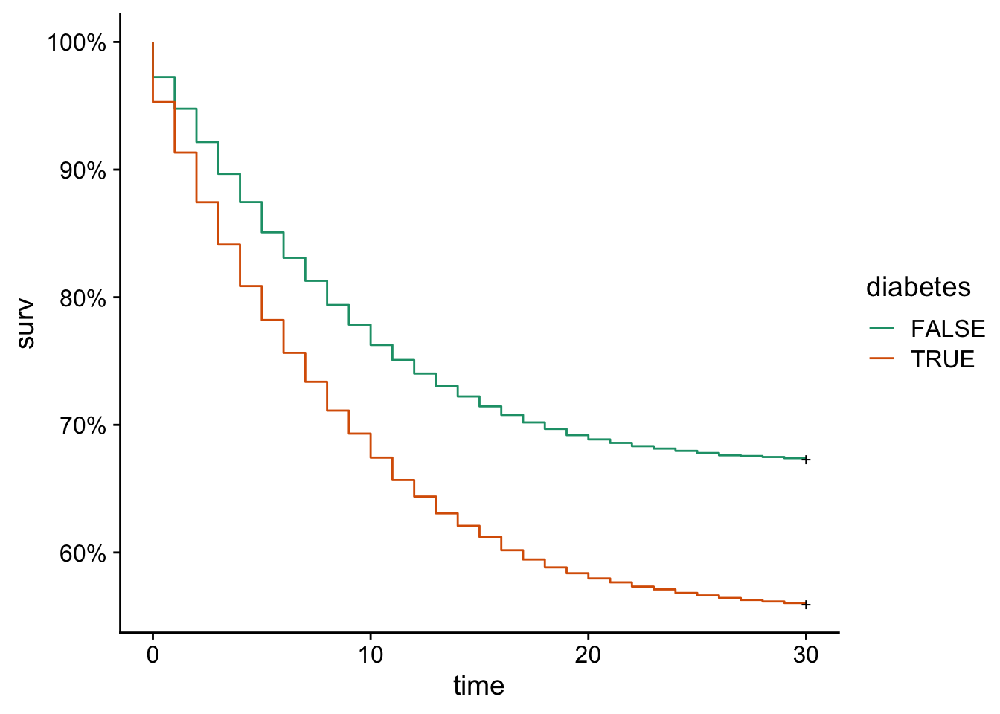
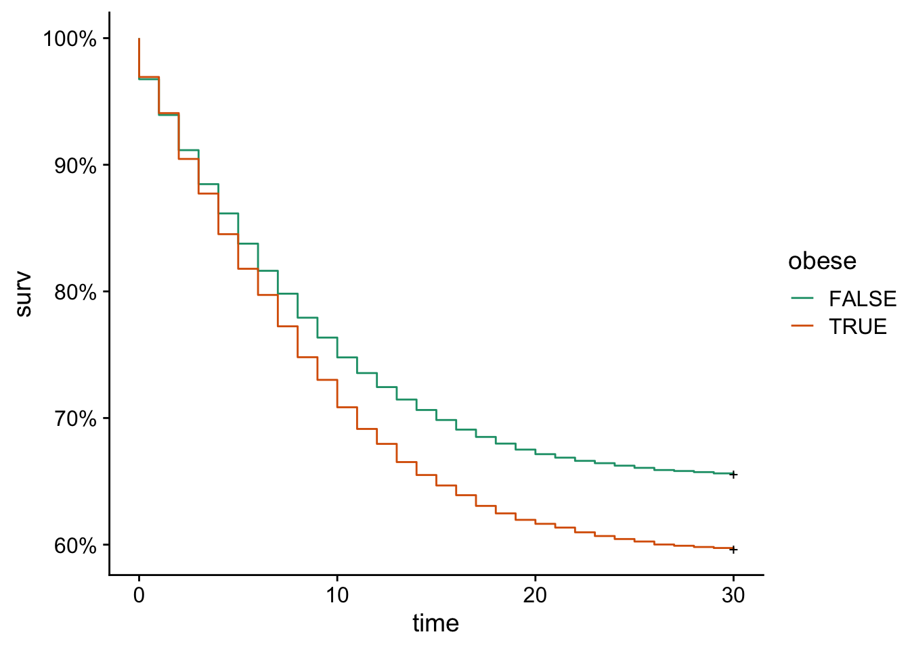
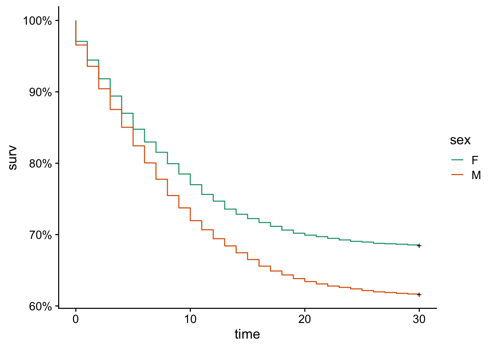
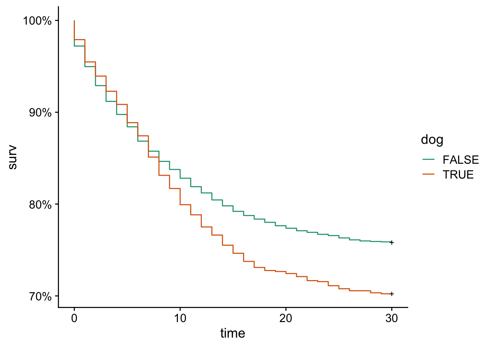

| factor | OR | p_OR | HR | p_HR |
|---|---|---|---|---|
| Antivirals | 1.15 | 0.01179 | 1.15 | 0.00108901 |
| Diabetes | 1.60 | < 2.22e-16 | 1.48 | < 2.22e-16 |
| Hyptertension | 1.80 | < 2.22e-16 | 1.61 | < 2.22e-16 |
| Obesity | 1.38 | < 2.22e-16 | 1.21 | 5.1218e-15 |
| Age > 65 | 2.74 | < 2.22e-16 | 2.33 | < 2.22e-16 |
| Sex (male) | 1.39 | < 2.22e-16 | 1.27 | < 2.22e-16 |
| Private Sector | 0.40 | < 2.22e-16 | 0.28 | < 2.22e-16 |
| Dog ownership | 1.51 | 4.1337e-08 | 1.25 | 0.00090071 |
7 Canine Confounders
Today’s lab
- Review of Canine Confounders
- Practice visualization using
ggplot2
Canine confounders
We’ll be using a COVID-19 dataset from Mexico City that was featured in an article in Significance Magazine titled Canine Confounders (Núñez 2022).
What is presented here is intentionally rough and open ended. After filling in the missing details in the starter code, what other questions might you have? What other tests and/or visualizations might be interesting?
Let’s start by looking at the primary effects of different risk factors and confounders on mortality.
COVID Survival
Here are Kaplan-Meier plots for our risk factors and confounders.





Missingness
Lets take a look at the missing rate of dog ownership by the hospital they were admitted to.
| Missing | FALSE | TRUE | |
|---|---|---|---|
| CRUZ ROJA | 6 | 0 | 0 |
| ESTATAL | 23 | 12 | 0 |
| IMSS | 16306 | 1 | 1 |
| IMSS-OPORTUNIDADES | 1 | 0 | 0 |
| ISSSTE | 2077 | 1495 | 363 |
| PEMEX | 465 | 263 | 1 |
| PRIVADA | 796 | 614 | 84 |
| SEDENA | 608 | 277 | 17 |
| SEMAR | 16 | 1 | 1 |
| SSA | 5580 | 2463 | 440 |
| UNIVERSITARIO | 1 | 0 | 0 |
After removing a few sectors that don’t have much data, let’s look at this graphically over time.
Dog ownership and missingness by sector: Bias
How does the risk of death change by sector, compared to the private sector?
Call:
glm(formula = death_intubation ~ sector, family = binomial, data = .)
Coefficients:
Estimate Std. Error z value Pr(>|z|)
(Intercept) -1.38128 0.06458 -21.388 < 2e-16 ***
sectorSSA 0.73377 0.06851 10.710 < 2e-16 ***
sectorIMSS 1.15267 0.06648 17.339 < 2e-16 ***
sectorISSSTE 0.36665 0.07397 4.956 7.18e-07 ***
sectorPEMEX 0.85653 0.10022 8.546 < 2e-16 ***
sectorSEDENA 0.62934 0.09624 6.539 6.18e-11 ***
---
Signif. codes: 0 '***' 0.001 '**' 0.01 '*' 0.05 '.' 0.1 ' ' 1
(Dispersion parameter for binomial family taken to be 1)
Null deviance: 42246 on 31849 degrees of freedom
Residual deviance: 41461 on 31844 degrees of freedom
(1 observation deleted due to missingness)
AIC: 41473
Number of Fisher Scoring iterations: 4References
Núñez, Isaac. 2022. “Canine Confounders.” Significance 19 (4): 24–27.